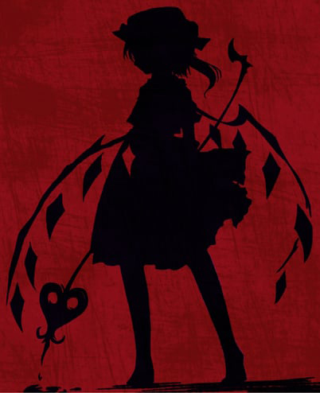

"SUFICIENTE. VOSOTROS, LOS DE LA MANSIÓN, SOIS LOS ÚNICOS QUE PUDIERON HABER HECHO ESTO."
Edd arremetió contra el asistente de mayor nivel.
"TÚ, ERES EL QUE PUEDE USAR ARMAS ¿VERDAD? Y TE QUEDASTE TODO ESTE TIEMPO EN LA MANSIÓN. DAME TU ARMA, AHORA"
"Yo... no tengo idea... "
Él; Bauti, a pesar de la amenaza, con respeto le entregó su arma. Era una espada carmesí ardiente.
"Espera, Edd, la forma de esta espada no concuerda con la marca del cuerpo. Ni siquiera tiene una quemadura. Parece más un arma blanca o..."
"Una lanza..."
Es verdad. Algunos de nosotros conocíamos la existencia de un arma ancestral llamada 'Laevateinn'. Es la espada que cargaba el demonio de sangre escarlata.
Todos sabemos quien es el demonio escarlata.
"¿... aze está detrás de todo esto?"
"Mirad, nosotros dejamos de tener comunicación con Aze hasta hace poco. Estamos bajos sus órdenes directas, pero la NASA delega nuestra prioridad al bien común de LSDC en cualquier caso."
"Asi que podemos irrumpir en la sala de comandos de la mansión, donde es probable que él se encuentre. Pero tendremos que encontrar el lugar donde se encuentra el mecanismo y luego descifrarlo, lo que tomará un tiempo."
Decidimos cooperar con los asistentes. Decidiendo que ya no nos íbamos a separar, fuimos a buscar juntos baterías para los walkies y algo para cenar ya que se estaba haciendo tarde.